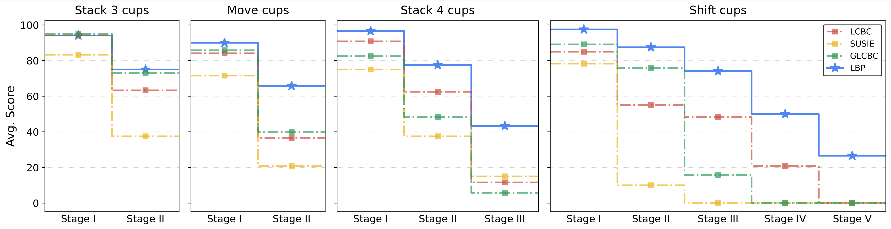

Illustration of latent space backward planning
Figure 1. Illustration of latent space backward planning.
Overall framework architecture of LBP
Figure 2. Overall framework architecture of LBP.
Real world experiments
Experimental setup and task definitions
To investigate the effectiveness of LBP in real world, we specifically design four long-horizon tasks: Stack 3 cups, Move cups, Stack 4 cups and Shift cups. Each task is decomposed into multiple sequential stages, as shown in Figure 3, requiring the robot to perform fundamental pick-and-place operations. These tasks establish a critical dependency where progress in subsequent stages is contingent on successful execution of preceding ones. We assess task performance using a stage-based scoring system with discrete values {0, 25, 50, 75, 100} for each stage, where each score corresponds to the completion progress of the current stage. A stage is assigned 100 only upon successful completion of the entire stage. In Figure 4, we present the quantitative comparison on the real-world tasks.

Figure 3. Left: the entire desktop environment setups of real-world experiments contains a 6 DoF AIRBOT arm and three Logitech cameras with different views; Right: (1) Move cups move both brown cups in front of the white ones; (2) Stack cups: stack all paper cups together; (3) Shift cups: shift all the paper cups to another plate, in a clockwise direction.

Figure 4. Real-world main results. We evaluate LCBC, GLCBC, SuSIE and LBP in aforementioned 4 tasks. For each task, we present the average performance of last-3 checkpoints. The metric "Avg. Score" measures the average score for each stage. We observe that while LBP slightly outperforms other strong baselines at the early stages, LBP wins by a fairly large margin at the final stages of all tasks. This shows LBP significantly excels in handling long-horizon tasks.